Árbol genealógico fácil
El árbol de tu familia, fácil de hacer y de regalar
Crea vuestro árbol genealógico en el móvil, compártelo en PDF con toda la familia e imprímelo en grande para colgarlo en casa o regalarlo.
Gratis para empezar · Sin cuentas ni anuncios · Sin suscripción
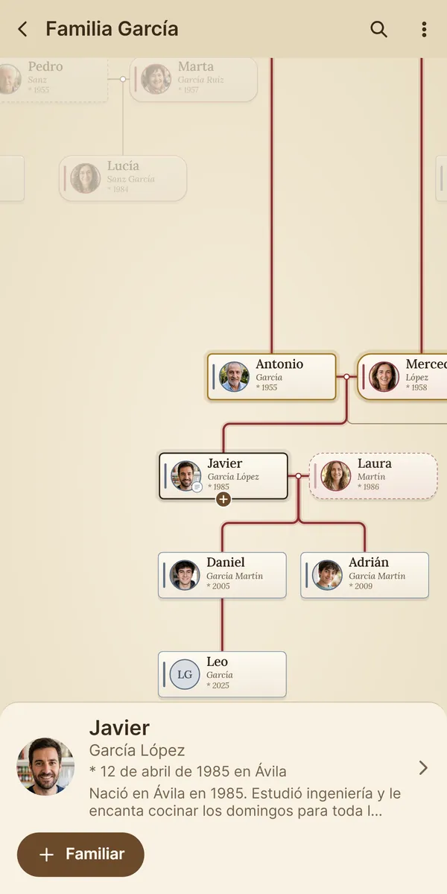

Fácil desde el primer minuto
Empieza por ti. Toca una tarjeta y añade a sus padres, su pareja, sus hijos o sus hermanos: Ramo coloca el árbol solo, también cuando la familia crece mucho. No hace falta saber de genealogía ni leer manuales.
- Fotos de la galería o de la cámara, con fechas aproximadas si no las sabes exactas.
- La historia de cada persona: dónde nació, a qué se dedicaba, sus anécdotas.
- Busca a cualquiera por su nombre y toca a alguien para ver iluminados sus antepasados y descendientes.
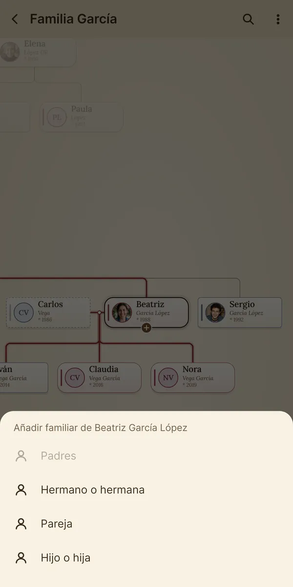
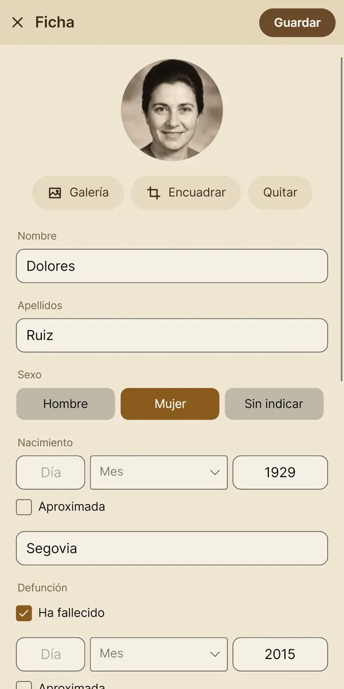
Compártelo con toda la familia
Manda el árbol en PDF por mensaje o correo: llega entero y nítido, y se puede ampliar para leer cada nombre. También como imagen, o en papel.
O manda el propio árbol: tu familia lo abre con Ramo, que es gratis, y puede verlo y completarlo. Si cada uno añade su rama y os lo volvéis a mandar, los árboles se juntan solos, sin duplicar a nadie.
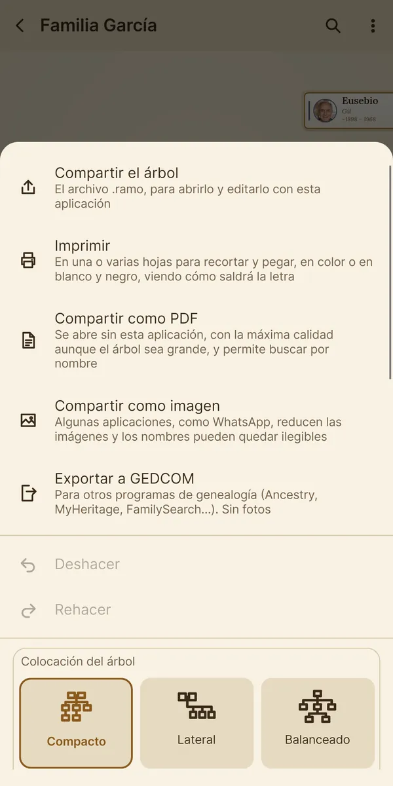
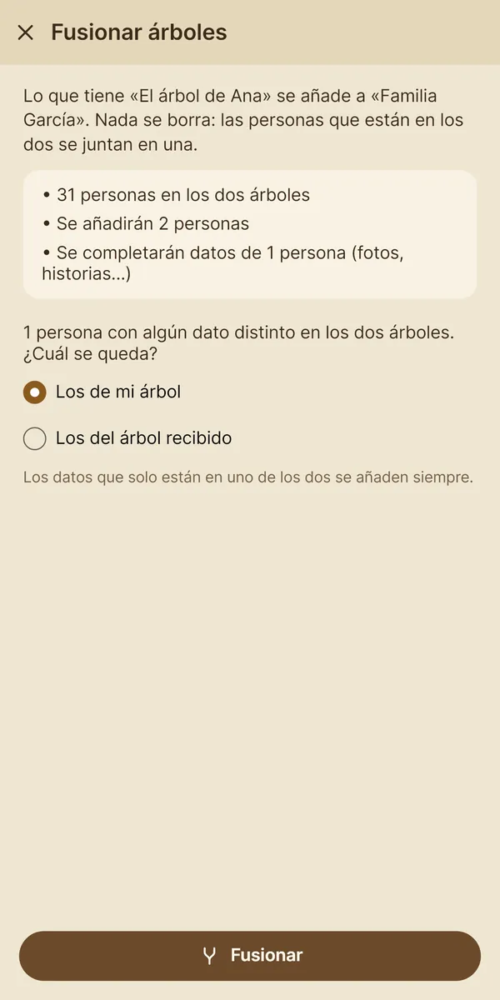
Imprímelo o regálalo
Ramo reparte el árbol en una o varias hojas (A4, A3, Carta…) para recortar y pegar, en color o en blanco y negro, y te enseña antes cómo saldrá y de qué tamaño quedará la letra.
O conviértelo en una lámina para regalar, con título, dedicatoria y marco, en los tamaños de marco más comunes: 30×40, 40×50 y 50×70 cm. Un regalo para los abuelos, para Navidad o para una reunión familiar.
Cómo imprimir el árbol en 50×70 cm · Ideas para regalarlo en Navidad

Un árbol claro y bonito, a tu manera
- Diez estilos, como Acuarela, Noche dorada, Papel y tinta o Pergamino, cada uno con sus colores y su letra.
- Tarjetas a tu gusto: anchas o altas, con recuadro o en medallón, con foto o solo con el nombre.
- Seis formas de colocar el árbol, también de izquierda a derecha para las familias muy anchas.
- El parentesco de cada uno con la persona principal: primo segundo, tío abuelo, sobrina nieta, suegra…
- Fecha y lugar de boda de cada pareja, y un aviso por la mañana con los cumpleaños de la familia.
- Importa y exporta GEDCOM, el formato de los demás programas de genealogía.
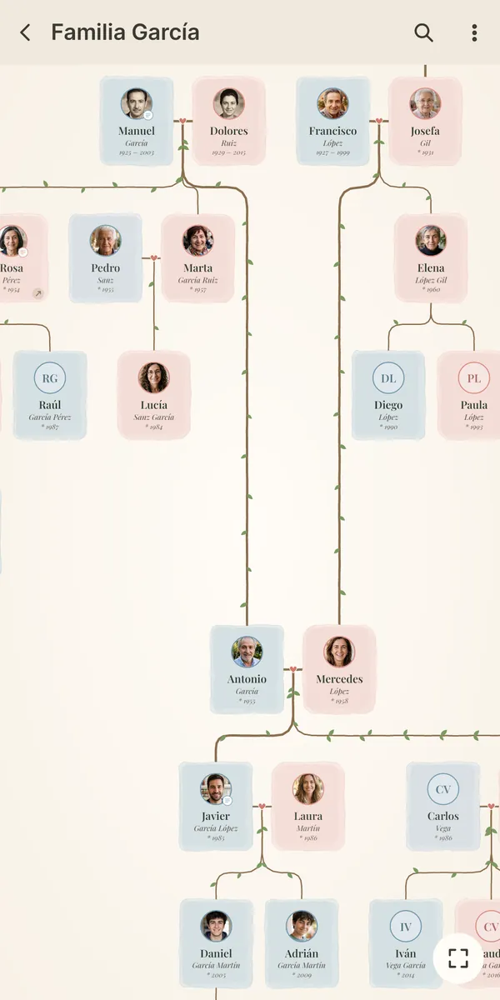
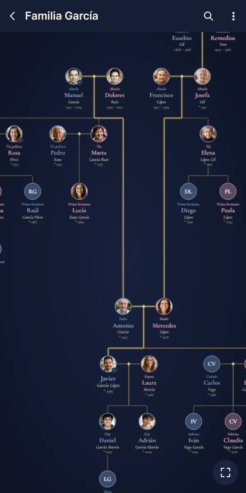
Sin cuentas: todo en tu móvil
No hay que registrarse y no hay anuncios. Tus árboles se guardan solo en tu móvil y funcionan sin conexión: no se mandan a ningún servidor y nadie más ve tus datos. Con la copia de seguridad guardas todo en un archivo.
También en el ordenador
Ramo está para Android, en Google Play, y para Windows, en la Microsoft Store. Los árboles son archivos .ramo que se abren igual en los dos: pásatelos y sigue donde lo dejaste, en la pantalla grande.
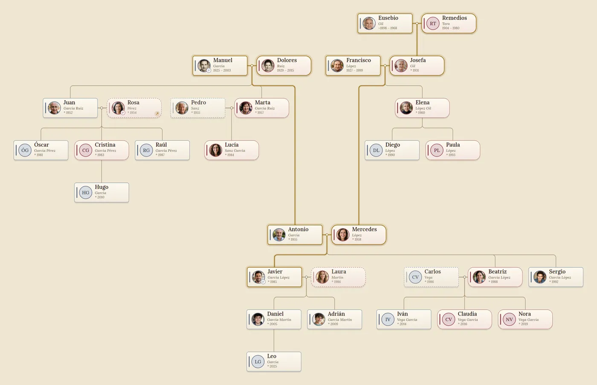
Gratis para empezar, y un solo pago para tenerlo todo
Gratis
- Crea tu árbol, hasta 50 personas.
- Abre y edita los árboles que te manden.
- Compártelo en PDF o imagen e imprímelo en hojas, con una pequeña marca «Hecho con Ramo».
- Sin anuncios.
Ramo completo
- Un solo pago, sin suscripción.
- Árboles y personas sin límite.
- Láminas para regalar.
- Árboles enlazados (la familia política en su propio árbol).
- PDF, imágenes e impresiones sin la marca.
Ramo completo se compra dentro de la aplicación, en Google Play o en la Microsoft Store.
Guías
Cómo imprimir tu árbol genealógico en grande, en 50×70 cmQué tamaño elegir, cómo hacer que se lean los nombres y qué pedir en la copistería.
Un árbol genealógico como regalo de NavidadIdeas para los abuelos y para toda la familia, y un calendario para tenerlo a tiempo.
 Calculadora de parentesco: qué es un primo segundo, un tío abuelo o un sobrino nietoAverigua qué es de ti cada familiar y en qué grado, con una tabla de parentescos.
Calculadora de parentesco: qué es un primo segundo, un tío abuelo o un sobrino nietoAverigua qué es de ti cada familiar y en qué grado, con una tabla de parentescos.
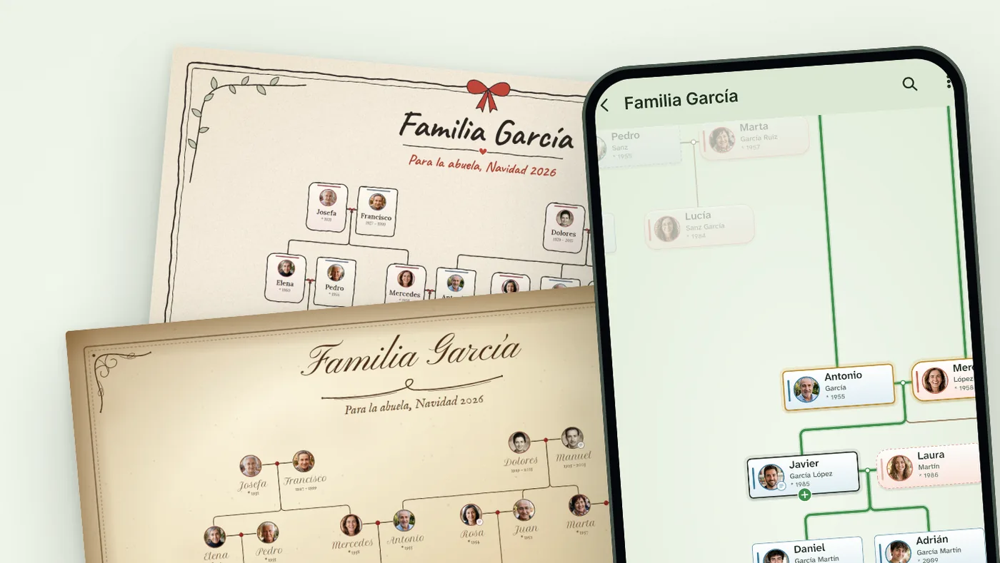
Cómo hacer un árbol genealógico paso a pasoQué preguntar, dónde buscar y cómo ordenarlo, con una plantilla gratis para imprimir.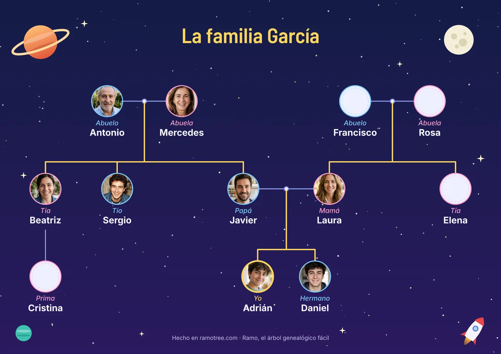
Árbol genealógico para niños: cómo hacerlo para el colegioPlantilla para imprimir, ideas con fotos y dibujos, y el vocabulario de la familia en inglés.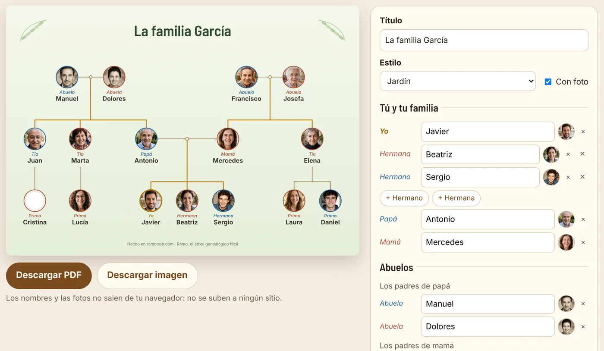
Crea tu árbol genealógico y descárgaloPon a tus abuelos, padres, tíos, primos y hermanos, y descárgalo en PDF o como imagen.